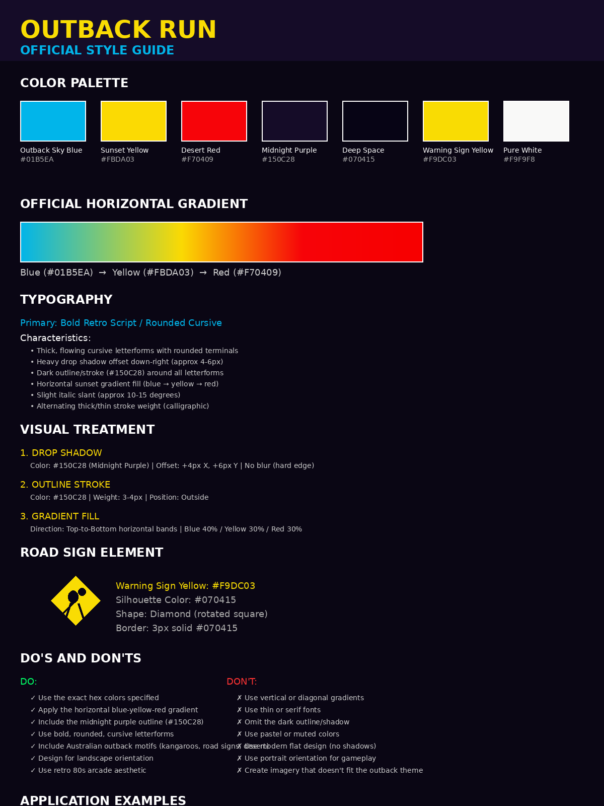

OFFICIAL STYLE GUIDE — VERSION 1.0
Outback Run is a retro-arcade racing game set in the Australian Outback. Every visual asset — from title cards to in-game sprites — must conform to this style guide to ensure visual consistency and brand recognition.
These exact hex values are derived directly from the official Outback Run logo. Do not approximate — use these values precisely.
| Color Name | Hex | RGB | Usage |
|---|---|---|---|
| Outback Sky Blue | #01B5EA | rgb(1, 181, 234) | Gradient top band, sky elements, UI highlights |
| Sunset Yellow | #FBDA03 | rgb(251, 218, 3) | Gradient middle band, road signs, score text |
| Desert Red | #F70409 | rgb(247, 4, 9) | Gradient bottom band, danger warnings, sunset horizon |
| Midnight Purple | #150C28 | rgb(21, 12, 40) | Text outlines, drop shadows, dark UI panels |
| Deep Space | #070415 | rgb(7, 4, 21) | Silhouettes, pure black accents, background base |
| Warning Yellow | #F9DC03 | rgb(249, 220, 3) | Road warning signs, hazard indicators |
| Pure White | #F9F9F8 | rgb(249, 249, 248) | High-contrast text, highlights, star points |
The signature horizontal gradient is the most recognizable visual element of the brand. It must be applied consistently across all title text and primary branding.
The Outback Run logo uses a bold, retro cursive script. While an exact font match may not always be available, all in-game text must emulate these characteristics.
Form: Bold, flowing cursive / script with rounded terminals
Weight: Heavy / Black (minimum 700 weight)
Slant: Slight forward italic (10–15 degrees)
Stroke: Calligraphic variation — thick downstrokes, thinner upstrokes
CSS Fallback Stack: 'Brush Script MT', 'Segoe Script', 'Comic Sans MS', cursive
| Element | Fill | Outline | Shadow |
|---|---|---|---|
| Game Title | Blue→Yellow→Red gradient | 3px #150C28 outside | +4px X, +6px Y, #150C28, 0 blur |
| Menu Headers | #FBDA03 solid | 2px #150C28 outside | +2px X, +3px Y, #070415, 0 blur |
| Score / HUD Numbers | #F9DC03 solid | 2px #150C28 outside | +2px X, +2px Y, #070415, 0 blur |
| Body / Instructions | #F9F9F8 solid | none | none |
| Warning Text | #F70409 solid | 2px #150C28 outside | +1px X, +2px Y, #070415, 0 blur |
Every major text element and prominent UI component must include a hard-edged drop shadow. No Gaussian blur — the shadow must have crisp edges to maintain the retro arcade feel.
Color: #150C28 (Midnight Purple) or #070415 (Deep Space) for darker scenes
Offset: +4px horizontal, +6px vertical (down-right)
Blur: 0px (hard edge only)
A thick dark outline separates text and key shapes from backgrounds. This is essential for readability against busy outback scenery.
Color: #150C28
Weight: 3–4px for titles, 2px for UI elements
Position: Outside (center or inside only if outside is impossible)
Primary branding text always uses the horizontal blue-yellow-red gradient. Secondary elements may use solid colors from the palette.
The kangaroo warning sign is a core brand motif. It appears in the logo and should appear throughout the game as a recurring visual anchor.
| Property | Value |
|---|---|
| Shape | Diamond (square rotated 45°) |
| Background | #F9DC03 Warning Yellow |
| Border | 3px solid #070415 |
| Silhouette | #070415 Deep Space (pure black) |
| Silhouette Subject | Kangaroo, emu, wombat, or other Australian fauna |
| Size Ratio | Border inset 8% from diamond edge |
Full logo with gradient fill, purple outline, hard shadow, and kangaroo road sign. Background: animated sunset over desert highway.
Gradient or yellow text with purple outline on dark semi-transparent panel (#150C28 at 80% opacity). Hover state: brighten gradient 15%.
Large yellow (#F9DC03) numerals with purple outline and shadow. Position: top-center or top-right, always readable against sky.
Diamond yellow signs with black silhouettes. Appear as roadside objects or overlay warnings. Scale: 48×48px minimum.
Retro-styled cars with bold outlines, chrome highlights, and gradient accents. Side-view or rear-view for racing perspective.
Parallax desert scenery: red dirt foreground, spinifex midground, purple-orange sunset sky. Keep silhouettes simple and bold.
Dark background (#070415) with centered logo, animated gradient shimmer, and loading bar in blue-yellow-red.
Large red (#F70409) text with heavy shadow. Subtext in yellow. Background: darkened game scene with vignette.
Outback Run is designed primarily for mobile players in landscape orientation.
| Property | Specification |
|---|---|
| Primary Orientation | Landscape (force landscape in browser) |
| Aspect Ratio | 16:9 minimum, 21:9 ultrawide supported |
| Minimum Resolution | 640×360 (mobile) / 1280×720 (desktop) |
| Touch Targets | Minimum 44×44px for all interactive elements |
| Text Legibility | Minimum 16px body text, 24px headers at 360px width |
| Safe Area | Keep critical UI within central 80% of screen |
Before committing any new asset to the Outback Run repository, verify it against this checklist:
| # | Check | Pass Criteria |
|---|---|---|
| 1 | Colors | Uses only palette colors (no approximations) |
| 2 | Gradient | Horizontal blue→yellow→red for titles (if applicable) |
| 3 | Outline | Dark purple (#150C28) outline on text/shapes |
| 4 | Shadow | Hard-edged drop shadow where appropriate |
| 5 | Font Style | Bold, rounded, cursive or cursive-like |
| 6 | Theme | Australian outback or retro-arcade motif |
| 7 | Orientation | Landscape format for gameplay assets |
| 8 | Style | Stylized/illustrated, not photorealistic |
The following image summarizes the key visual elements of the Outback Run style guide:

Outback Run Style Guide v1.0 | Created September 2026
All assets must conform to this guide. When in doubt, reference the official logo.